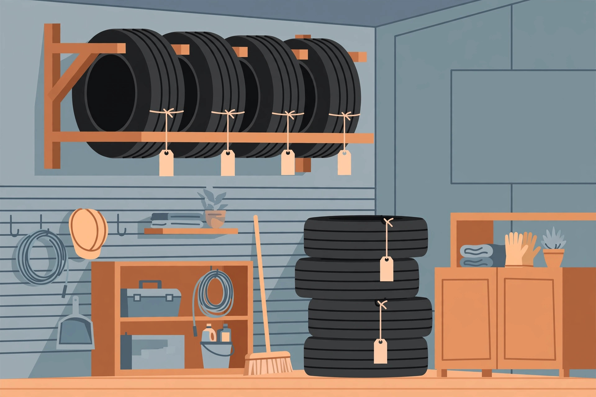

Storing seasonal tires in the garage: mounted, bare, racked, or stacked

Twice a year, a set of tires comes off the car and needs a home for six months. Most people lean them against a wall and forget them — then wonder why a sidewall cracked or why swap day turned into a hunt for lug nuts. Tire storage is one of the few garage jobs with an actual manufacturer specification behind it, and it starts with a single question most guides bury: are the tires still mounted on rims, or not?
The first decision: mounted on rims, or bare tires?
Michelin's published storage guidance draws the line cleanly. Tires mounted on rims should be hung up or stacked — not stored standing upright. Tires without rims should be stood upright — not stacked and not hung, because hanging a bare tire can distort the bead, and stacking bare tires loads the sidewalls of the ones at the bottom. That one distinction decides everything downstream: whether you need a rack at all, how much floor the set takes, and how you label it.
Either way, the conditions are the same. Michelin specifies a cool, dry, clean, indoor environment, away from direct sunlight, heat, and ozone sources. The storage surface itself must be free of grease, gasoline, solvents, and oils, which can deteriorate the rubber. If a set absolutely has to sit outdoors for a short stretch, Michelin's fallback is to raise it off the ground and use a waterproof covering with ventilation holes so moisture does not build up — a compromise, not a plan.
Match the method to the set: floor, stack, or wall rack
| Your set | Method | Watch out for |
|---|---|---|
| Mounted, floor space available | Stack flat, one on another, with light padding between tires | Keep the stack modest; trade-press guidance caps flat stacks at roughly 4.5–5 feet tall |
| Mounted, floor space scarce | Hang on rim hooks or a wall-mounted tire rack | The rack rating must clear the full set's weight, and it must be fixed to studs |
| Unmounted (bare tires) | Stand upright side by side, on a rack or a clean shelf | Rotate their position periodically; never hang them by the bead |
| Two vehicles' worth of sets | One rack per set, or rack plus floor stack | Add the sets' weights together before trusting a single rack's rating |
The stack deserves one more note: guidance summarized from Tire Rack recommends light padding between stacked mounted tires, and keeping lug nuts, sensors, and other small hardware in labeled pouches that stay with the same set. A stack is a system, not a pile.
Rack capacity, verified: do the set-weight math
Wall racks advertise a single capacity number, and it is only useful once you know what your set weighs. A tire expert quoted by Yardbarker puts small tires at roughly 20 lb each and large off-road tires at 70 lb or more, with typical passenger wheels adding 25–35 lb — so a small mounted passenger set of four lands around 45–55 lb per corner, or roughly 180–220 lb for the set. Four large SUV assemblies can pass 300 lb before you have lifted the fourth one.
Now read the rack specs against that math (manufacturer and retailer listings, checked October 16, 2026):
- Stalwart adjustable wall rack: 300 lb capacity, telescoping 32–50 in, holds up to 4 standard tires, folds flush to the wall when empty — listed at $123.48 CAD on Amazon.ca on the check date. Fine for a passenger set; marginal for a heavy SUV set.
- VEVOR TC0513 folding rack: 300 lb (136 kg) capacity, fits R14–R20 tires, holds 4 standard tires. Its listing notes that expansion bolts for concrete walls are not included — budget for your own wall hardware.
- Proslat 10026: 350 lb capacity, but only when mounted directly to studs, and sized for a set of four tires and mags up to 20 in.
- Martins MWM-80: 500 lb capacity, holds 8 SUV tire-and-wheel assemblies up to 34 in outside diameter, built for standard 16 in centre-to-centre studs — anchors not included.
The pattern to verify on any rack: the rating assumes the mounting the maker specifies. A 350 lb rack screwed into drywall anchors is not a 350 lb rack. If your set's estimated weight is within about a fifth of the rack's limit, step up a class rather than trusting the headline number.
Choose the spot: what tires should never live beside
"Cool, dry, dark" is the summary; the garage version is a list of neighbours to avoid. Tire Review's storage guidance warns that electric motors can generate tire-damaging concentrations of ozone, so tires should not be stored near compressors, fans, furnaces, air conditioners, pumps, or other electric devices — a real constraint in a garage where the furnace and the tire corner are often the same corner. The same guidance adds: keep tires away from petroleum chemicals (oil, grease, gasoline, diesel, solvents), never store them directly on asphalt, and avoid moisture, sunlight, and hot temperatures. Pick the interior wall away from the furnace, the solvent shelf, and the sunny door — in that order.
The swap-day procedure: clean, label, store
- Before removal, mark each tire's position. Michelin advises noting where each tire sat on the car so the set can be rotated properly at the next mounting. A chalk mark — LF, RF, LR, RR — on the tread does it.
- Inspect while they are off. Look for damage and uneven wear, and remove stones and debris trapped in the grooves, per Michelin's pre-storage steps.
- Wash and dry completely. Clean tires and wheels with water (mild soap is the usual expert advice) and dry them well to limit corrosion. Skip gloss or dressing products — the Yardbarker-quoted expert warns they can break down the rubber compound.
- Bag the hardware. Lug nuts, centre caps, and any sensor notes go in a labeled pouch stored with the set, not in a random drawer.
- Store by the mounted rule. Mounted: stack flat with padding or hang. Bare: stand upright. Write the storage date on a tag tied to the set.
- Mid-season, rotate bare tires a quarter turn and shift stacked sets if the stack allows it — the expert guidance suggests repositioning roughly every four weeks to spread pressure points.
What success looks like
Success is boring: four tires in one known spot, each labeled with its last position, hardware in a pouch with the set, nothing stacked on top of them, and air that does not smell of solvent. At the next swap, you should be able to roll the set to the car in the order it will be mounted, with no searching and no surprises. Before reinstalling, check and set pressures to the vehicle manufacturer's recommendation — storage advice consistently ends with verifying pressure before the tires go back into service.
FAQ
Should stored tires stay inflated? Mounted tires are normally stored at or near their recommended pressure and checked before reinstallation; inflation is moot for bare tires. Follow your tire maker's guidance for your specific set.
Can I stack tires on the bare concrete floor? Prefer a pallet, rack, or clean barrier between rubber and floor, make sure the surface is free of oil and solvents, and never use asphalt as the resting surface.
Is a tire rack worth it for one set? Only if floor space is the binding constraint. A padded floor stack follows the same manufacturer rule and costs nothing; the rack buys back the floor.